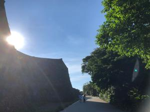
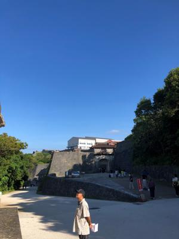
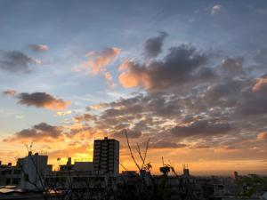
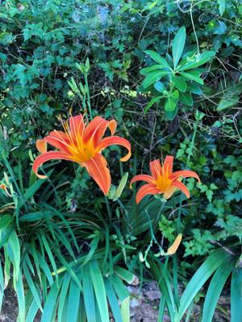

うるがいの話 ある日
最新: 靴箱の話【うるがいの話 ある日】とは 一日だけのプログです
『うるがいの話』の最新一日だけのプログで、通信料が少なく経済的だ。カニの画像をクリックすると全ての日付が載る『うるがいの話』サイトを表示します
|
|
【うるがいの話】 うるがい(ｳﾙｶﾞｲ urugai)とは、『もずくがに』の名前でとても大きくなります。 |
|---|---|
|
|
【カミマヤーの話】 猫のことを方言でマヤーといいます。カミマヤー（kamimayaa）とは、神の猫のことです。 |
|
【たながぁの音楽】 たながぁ（ﾀﾅｶﾞｰ tanagaa）とは手長えびのことで、何種類かあり大きいのは車 エビぐらいになります。 |

|
【ぶながぁの話】 ぶながぁ(ﾌﾞﾅｶﾞｰ bunagaa)とは、赤い髪の毛、赤い身体、そして身長は１ｍ２０ｃｍ ぐらい、川の蟹を食べているの目撃された。場所は沖縄県国頭郡大宜味村のと ある村僕の隣近所に住んでいる爺さんから、聞いた話です。 |
|
|
【ギーマの話】 ギーマ(giima)とは、山原の里山に咲くスズランに似た、 花を付けます。実は食べられます、 気が付くと口の周りが紫になっています。 |
2022年10月10日 (月）靴箱の話
16:05
  
ヨメのお母さんの靴箱の扉が、外れていた。コンクリートの壁と右側の引き戸
を固定している柱を、接着していたものが古くなって外れてしまっていた。メ
イクマンから、コンクリートと木材にも使える接着材を買ってきて、昨日接着
しなおす。扉を空けないよう、ガムテープで左右の扉をしめ、押さえる。２か
所も・・・。ヨメのお母さんは、気になるのか近くで修理を見ていた、作業を
終えた後、接着剤を固定しているの一日は触らないようにとお願いした。とこ
ろがである、今日、接着しているか確認するため、靴箱を確認すると左右の扉
を固定しているガムテープが、壊されている（壊すにはかなり力がいる）。ヨ
メのお母さんが外してしまっていた。ヨメ曰く、痴呆がひどくなっていると。
ま、接着剤は綺麗にくっついたのでいいものの。ヨメのお母さんは、万事がこ
の調子なのである。

１６時０１分 ビットコインの総資産 ￥８、１７４↑